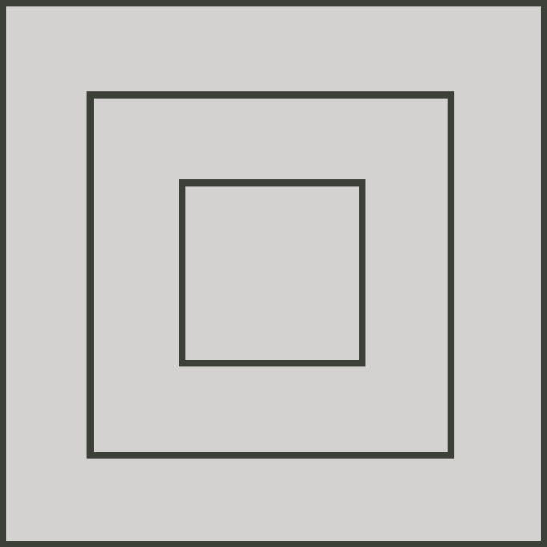

Problem of the Week
Problem C and Solution
‘Cube’ism
Problem
As an artist, Ernest is doing a solo show titled CUBES. One of his pieces is shown below. Each layer of the piece is a cube. The bottom cube has a side length of 3 m, the middle cube has a side length of 2 m, and the top cube has a side length of 1 m. The top two layers are each centred on the layer below.
Ernest wishes to paint the piece. Since the piece will be suspended in the air, the bottom will also be painted. Determine the total surface area of the piece, including the bottom.
Solution
To determine the areas we will primarily use the formula for the area of a rectangle \[Area=length \times width\]
Each cube has 4 exposed square sides, so the total area of all the sides is \[\begin{aligned} 4 \times (1\times 1) + 4 \times(2\times 2) + 4 \times(3 \times 3)&=4 \times (1)+4 \times(4)+4 \times(9)\\ &=4+16+36\\ &=56 \mbox{ m}^2\end{aligned}\]
To determine the area of the exposed top of each of the cubes, look down on the tower and see a image like the one below.

This exposed area is exactly the same as the side area of one face of the largest cube. Therefore, the top exposed area is \(3\times 3=9\mbox{ m}^2\). The top area and the bottom area are the same. Therefore, the bottom area is 9 m\(^2\).
Therefore, the total surface area is \(56+9+9=74\) m\(^2\).
Extension: Three cubes with side lengths \(x\), \(y\) and \(z\) are stacked on top of each other in a similar manner to the original problem such that \(0<x<y<z\). Show that the total surface area of the stack, including the bottom, is \(6z^2+4y^2+4x^2\).